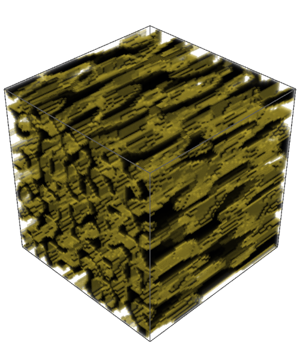
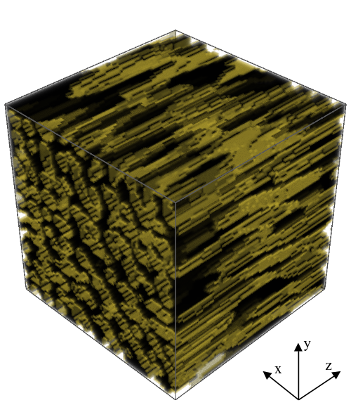
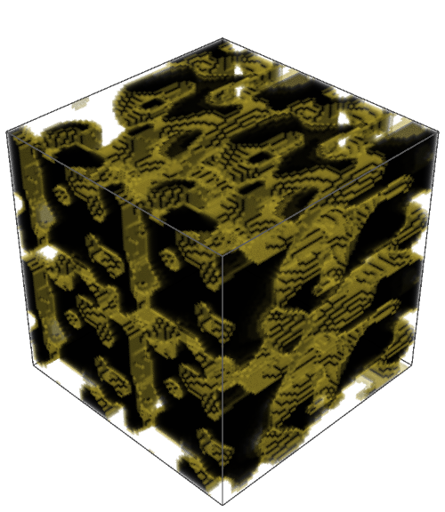
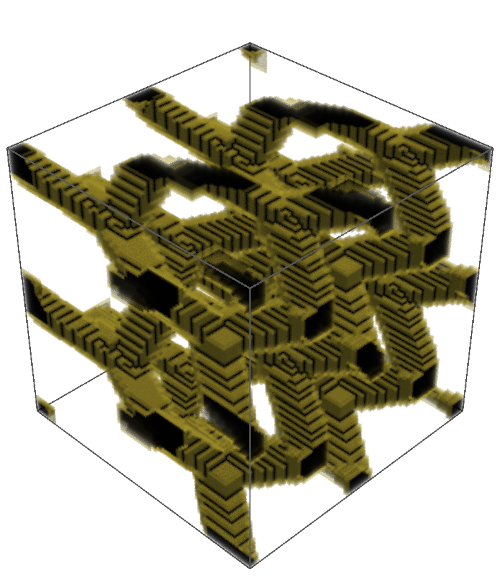
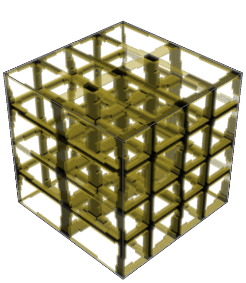
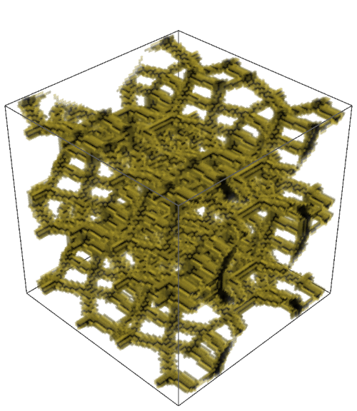
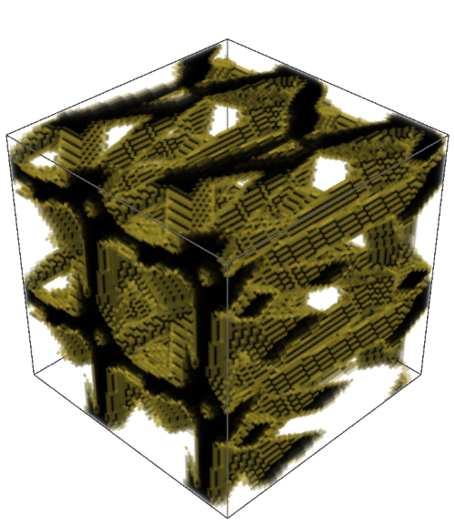

Dataset#
Coverage
This page annotates Main manuscript, source lines 67-313. Blue blocks reproduce or faithfully restate the original source material. Amber blocks are model-added interpretation explaining role, assumptions, and reading context.
Reading lens
This is the experimental design section. It defines where the geometry comes from, how anisotropy is controlled, and how mechanical targets are computed.
The dataset choices are not incidental: RTP isolates controlled anisotropy, TD tests generalization under statistical isotropy, and ATTD tests a transformed anisotropic setting.
Every later performance claim depends on the target-generation and anisotropy definitions introduced here.
Annotated Source#
Dataset#
Original paper material - source lines 67-67
67 | \section{Dataset}
Readable text
Dataset
Model-added interpretation - source lines 67-67
This heading opens a new logical unit: Dataset.
Use it as a checkpoint: the paper is changing either scale, object, method, or evidential role.
In the dataset section, this block defines the experimental material on which all later descriptor comparisons depend.
Random Trigonometric Phase#
Original paper material - source lines 69-69
69 | \subsection{Random Trigonometric Phase}
Readable text
Random Trigonometric Phase
Model-added interpretation - source lines 69-69
This heading opens a new logical unit: Random Trigonometric Phase.
Use it as a checkpoint: the paper is changing either scale, object, method, or evidential role.
This defines the RTP construction, where anisotropy is controlled in Fourier space before thresholding into a porous structure.
In the dataset section, this block defines the experimental material on which all later descriptor comparisons depend.
Original paper material - source lines 71-74
71 | The porous two-phase structures used in this study were generated using a
72 | \emph{random trigonometric phase} (RTP) approach, in which a continuous,
73 | statistically homogeneous random field is constructed as a superposition of
74 | trigonometric modes with random phases and wavevectors.
Readable text
The porous two-phase structures used in this study were generated using a random trigonometric phase (RTP) approach, in which a continuous, statistically homogeneous random field is constructed as a superposition of trigonometric modes with random phases and wavevectors.
Model-added interpretation - source lines 71-74
This keeps the physical object in view: porous solid/void geometry is the structure whose topology and mechanics are being related.
This defines the RTP construction, where anisotropy is controlled in Fourier space before thresholding into a porous structure.
In the dataset section, this block defines the experimental material on which all later descriptor comparisons depend.
Original paper material - source lines 77-82
77 | We consider a cubic domain discretized on a regular
78 | $N \times N \times N$ grid with $N=80$ and periodic boundary conditions.
79 | The spatial coordinates are normalized to the unit cube,
80 | $\mathbf{x} \in [0,1)^3$, and periodicity is enforced implicitly by the
81 | trigonometric basis.
82 | The RTP scalar field $S(\mathbf{x})$ is defined as
Readable text
We consider a cubic domain discretized on a regular \(N x N x N\) grid with \(N=80\) and periodic boundary conditions. The spatial coordinates are normalized to the unit cube, \(x in [0,1)^3\), and periodicity is enforced implicitly by the trigonometric basis. The RTP scalar field \(S(x)\) is defined as
Model-added interpretation - source lines 77-82
This defines the RTP construction, where anisotropy is controlled in Fourier space before thresholding into a porous structure.
This broadens the study beyond RTP by adding structurally diverse families that test whether the descriptor idea generalizes.
In the dataset section, this block defines the experimental material on which all later descriptor comparisons depend.
Original paper material - source lines 83-89
83 | \begin{equation}
84 | \label{eqn:rtp_S}
85 | S(\mathbf{x}) =
86 | \sqrt{\frac{2}{K}}
87 | \sum_{k=1}^{K}
88 | \cos\!\left( 2\pi\,\mathbf{q}_k \cdot \mathbf{x} + \phi_k \right),
89 | \end{equation}
Model-added interpretation - source lines 83-89
This mathematical block defines part of the computational object used later in the pipeline.
Track the variables here: later descriptors and model inputs inherit these definitions.
This defines the RTP construction, where anisotropy is controlled in Fourier space before thresholding into a porous structure.
In the dataset section, this block defines the experimental material on which all later descriptor comparisons depend.
Original paper material - source lines 90-94
90 | where $K$ is the number of trigonometric modes,
91 | $\phi_k \sim \mathcal{U}(0,2\pi)$ are independent random phase shifts, and the
92 | wavevectors $\mathbf{q}_k$ are sampled from a bounded integer lattice $\mathbf{q}_k = (n_x, n_y, n_z), n_\alpha \in [-n_\text{max}, n_\text{max}].$
93 | Because each cosine mode is periodic on the unit torus, the field $S$ and all
94 | derived microstructures satisfy periodic boundary conditions by construction.
Readable text
where \(K\) is the number of trigonometric modes, \(phi_k ~ U(0,2pi)\) are independent random phase shifts, and the wavevectors \(q_k\) are sampled from a bounded integer lattice \(q_k = (n_x, n_y, n_z), n_alpha in [-n_max, n_max].\) Because each cosine mode is periodic on the unit torus, the field \(S\) and all derived microstructures satisfy periodic boundary conditions by construction.
Model-added interpretation - source lines 90-94
This keeps the physical object in view: porous solid/void geometry is the structure whose topology and mechanics are being related.
This defines the RTP construction, where anisotropy is controlled in Fourier space before thresholding into a porous structure.
In the dataset section, this block defines the experimental material on which all later descriptor comparisons depend.
Original paper material - source lines 96-98
96 | The continuous field $S(\mathbf{x})$ is converted into a binary porous medium
97 | by thresholding.
98 | The material indicator function $X(\mathbf{x}) \in \{0,1\}$ is defined as
Readable text
The continuous field \(S(x)\) is converted into a binary porous medium by thresholding. The material indicator function $X(x) in \0,1$ is defined as
Model-added interpretation - source lines 96-98
This keeps the physical object in view: porous solid/void geometry is the structure whose topology and mechanics are being related.
This explains how continuous fields become admissible binary materials and why connectivity/percolation filters are needed for mechanical tests.
In the dataset section, this block defines the experimental material on which all later descriptor comparisons depend.
Original paper material - source lines 99-105
99 | \[
100 | X(\mathbf{x}) =
101 | \begin{cases}
102 | 1, & S(\mathbf{x}) > \tau, \\
103 | 0, & \text{otherwise},
104 | \end{cases}
105 | \]
Model-added interpretation - source lines 99-105
This mathematical block defines part of the computational object used later in the pipeline.
Track the variables here: later descriptors and model inputs inherit these definitions.
In the dataset section, this block defines the experimental material on which all later descriptor comparisons depend.
Original paper material - source lines 106-114
106 | where $X=1$ denotes solid material and $X=0$ denotes void.
107 | For each realization, the threshold $\tau$ is determined numerically such that
108 | the resulting porosity $\phi$ matches a prescribed target value, selected
109 | prior to generation.
110 | To ensure physically meaningful structures, each realization is subjected to a
111 | connectivity and percolation analysis under periodic boundary conditions:
112 | all material voxels must form a single connected component and the solid phase
113 | must percolate across the domain in all three Cartesian directions, otherwise the structure is not included in the dataset.
114 | In this study, we used $K$ values sampled uniformly from the interval $[10, 30]$, fixed $n_{\text{max}} = 12$, and selected the target porosity uniformly from the interval $[0.2, 0.8]$.
Readable text
where \(X=1\) denotes solid material and \(X=0\) denotes void. For each realization, the threshold \(tau\) is determined numerically such that the resulting porosity \(phi\) matches a prescribed target value, selected prior to generation. To ensure physically meaningful structures, each realization is subjected to a connectivity and percolation analysis under periodic boundary conditions: all material voxels must form a single connected component and the solid phase must percolate across the domain in all three Cartesian directions, otherwise the structure is not included in the dataset. In this study, we used \(K\) values sampled uniformly from the interval \([10, 30]\), fixed \(n_max = 12\), and selected the target porosity uniformly from the interval \([0.2, 0.8]\).
Model-added interpretation - source lines 106-114
This keeps the physical object in view: porous solid/void geometry is the structure whose topology and mechanics are being related.
This is the density-baseline motivation: porosity alone is treated as insufficient for predicting stiffness across complex porous morphologies.
This is central to the paper: the loading direction must survive the descriptor construction because the material response is axis-dependent.
This defines the RTP construction, where anisotropy is controlled in Fourier space before thresholding into a porous structure.
This explains how continuous fields become admissible binary materials and why connectivity/percolation filters are needed for mechanical tests.
Original paper material - source lines 117-123
117 | In the isotropic case, the statistical properties of $S$ are invariant under
118 | rotations, as the spectral content is identical on average along all spatial
119 | directions.
120 | Directional anisotropy is introduced explicitly in Fourier space by scaling
121 | the components of the wavevectors prior to evaluating Eq.~\eqref{eqn:rtp_S}.
122 | Specifically, integer wavevectors $\mathbf{q}_k^{(0)}$ are first sampled
123 | uniformly from the bounded lattice, and the final wavevectors are defined as
Readable text
In the isotropic case, the statistical properties of \(S\) are invariant under rotations, as the spectral content is identical on average along all spatial directions. Directional anisotropy is introduced explicitly in Fourier space by scaling the components of the wavevectors prior to evaluating Eq.~eqn:rtp_S. Specifically, integer wavevectors \(q_k^(0)\) are first sampled uniformly from the bounded lattice, and the final wavevectors are defined as
Model-added interpretation - source lines 117-123
This is central to the paper: the loading direction must survive the descriptor construction because the material response is axis-dependent.
This defines the RTP construction, where anisotropy is controlled in Fourier space before thresholding into a porous structure.
This supplies the scalar anisotropy summaries used to interpret when directional descriptors should matter most.
This is the target-generation mechanism: the paper uses FFT-based homogenization rather than treating stiffness labels as empirical annotations.
In the dataset section, this block defines the experimental material on which all later descriptor comparisons depend.
Original paper material - source lines 124-126
124 | \begin{equation*}
125 | \mathbf{q}_k = \mathrm{diag}(s_x, s_y, s_z)\,\mathbf{q}_k^{(0)},
126 | \end{equation*}
Model-added interpretation - source lines 124-126
This mathematical block defines part of the computational object used later in the pipeline.
Track the variables here: later descriptors and model inputs inherit these definitions.
In the dataset section, this block defines the experimental material on which all later descriptor comparisons depend.
Original paper material - source lines 127-131
127 | where $(s_x, s_y, s_z)$ are prescribed anisotropy scaling factors.
128 | This construction directly controls the characteristic correlation lengths of
129 | the random field: larger values of $s_\alpha$ correspond to higher spatial
130 | frequencies and thus shorter correlation lengths along direction $\alpha$,
131 | whereas smaller values of $s_\alpha$ lead to longer-range correlations.
Readable text
where \((s_x, s_y, s_z)\) are prescribed anisotropy scaling factors. This construction directly controls the characteristic correlation lengths of the random field: larger values of \(s_alpha\) correspond to higher spatial frequencies and thus shorter correlation lengths along direction \(alpha\), whereas smaller values of \(s_alpha\) lead to longer-range correlations.
Model-added interpretation - source lines 127-131
This is central to the paper: the loading direction must survive the descriptor construction because the material response is axis-dependent.
In the dataset section, this block defines the experimental material on which all later descriptor comparisons depend.
Original paper material - source lines 133-135
133 | In this work, we set $s_x = s_y = 1$ and $s_z = 0.2$, resulting in structures
134 | with significantly extended correlation length along the $z$ axis and a
135 | pronounced directional anisotropy.
Readable text
In this work, we set \(s_x = s_y = 1\) and \(s_z = 0.2\), resulting in structures with significantly extended correlation length along the \(z\) axis and a pronounced directional anisotropy.
Model-added interpretation - source lines 133-135
This is central to the paper: the loading direction must survive the descriptor construction because the material response is axis-dependent.
In the dataset section, this block defines the experimental material on which all later descriptor comparisons depend.
Original paper material - source lines 137-152
137 | \begin{figure}
138 | \centering
139 | \begin{overpic}[width=0.3\textwidth]{render_rtp_420.png}
140 | \put(5,85){\large a}
141 | \end{overpic}
142 | \begin{overpic}[width=0.3\textwidth]{render_rtp_121.png}
143 | \put(5,85){\large b}
144 | \end{overpic}
145 | \begin{overpic}[width=0.3\textwidth]{render_rtp_349.png}
146 | \put(5,85){\large c}
147 | \end{overpic}
148 | \caption{
149 | Three exemplary RTP structures illustrating increasing structural and mechanical anisotropy. The directional Young’s moduli $E=(E_x,E_y,E_z)$ are: (a) $(10.3, 11.3, 31.4)\,\mathrm{GPa}$, (b) $(5.2, 10.0, 33.1)\,\mathrm{GPa}$, and (c) $(19.8, 17.5, 51.2)\,\mathrm{GPa}$. The corresponding porosities are $0.60$, $0.54$, and $0.68$, while the spectral anisotropy components $k=(k_x,k_y,k_z)$ are $(0.63, 0.69, 0.27)$, $(0.98, 0.89, 0.25)$, and $(1.00, 1.20, 0.19)$, respectively. The progressive reduction of $k_z$ relative to $k_x$ and $k_y$ reflects increasing elongation along the $z$ direction, consistent with the growing contrast between in-plane and out-of-plane Young’s moduli.
150 | }
151 | \label{fig:rtp}
152 | \end{figure}
Readable text
Three exemplary RTP structures illustrating increasing structural and mechanical anisotropy. The directional Young’s moduli \(E=(E_x,E_y,E_z)\) are: (a) \((10.3, 11.3, 31.4) GPa\), (b) \((5.2, 10.0, 33.1) GPa\), and (c) \((19.8, 17.5, 51.2) GPa\). The corresponding porosities are \(0.60\), \(0.54\), and \(0.68\), while the spectral anisotropy components \(k=(k_x,k_y,k_z)\) are \((0.63, 0.69, 0.27)\), \((0.98, 0.89, 0.25)\), and \((1.00, 1.20, 0.19)\), respectively. The progressive reduction of \(k_z\) relative to \(k_x\) and \(k_y\) reflects increasing elongation along the \(z\) direction, consistent with the growing contrast between in-plane and out-of-plane Young’s moduli.
Figure assets carried into the book



Model-added interpretation - source lines 137-152
This figure is evidential, not decorative: it gives visual grounding for the structures, descriptors, or performance pattern discussed around it.
Read the caption carefully because it usually encodes the variables and comparisons that make the visual scientifically meaningful.
This connects geometry to the target variable: directional Young’s modulus under a specified loading axis.
This is central to the paper: the loading direction must survive the descriptor construction because the material response is axis-dependent.
This defines the RTP construction, where anisotropy is controlled in Fourier space before thresholding into a porous structure.
Original paper material - source lines 154-154
154 | A total of 500 distinct RTP microstructures were generated. For each structure, uniaxial compression tests were performed independently along the three Cartesian directions, and the corresponding directional Young’s moduli were computed using an FFT-based spectral homogenization method implemented in \texttt{FFTMAD} (see Section~\ref{sec:fftmad} for details of the numerical procedure). Figure~\ref{fig:rtp} presents three exemplary RTP structures spanning increasing levels of structural anisotropy, together with their corresponding directional Young’s moduli, porosities, and spectral anisotropy measures, illustrating correlation between directional morphology and mechanical response.
Readable text
A total of 500 distinct RTP microstructures were generated. For each structure, uniaxial compression tests were performed independently along the three Cartesian directions, and the corresponding directional Young’s moduli were computed using an FFT-based spectral homogenization method implemented in
FFTMAD(see Section (ref: sec:fftmad) for details of the numerical procedure). Figure (ref: fig:rtp) presents three exemplary RTP structures spanning increasing levels of structural anisotropy, together with their corresponding directional Young’s moduli, porosities, and spectral anisotropy measures, illustrating correlation between directional morphology and mechanical response.
Model-added interpretation - source lines 154-154
This keeps the physical object in view: porous solid/void geometry is the structure whose topology and mechanics are being related.
This connects geometry to the target variable: directional Young’s modulus under a specified loading axis.
This is central to the paper: the loading direction must survive the descriptor construction because the material response is axis-dependent.
This defines the RTP construction, where anisotropy is controlled in Fourier space before thresholding into a porous structure.
This supplies the scalar anisotropy summaries used to interpret when directional descriptors should matter most.
Dataset of topologically diverse structures#
Original paper material - source lines 156-156
156 | \subsection{Dataset of topologically diverse structures}
Readable text
Dataset of topologically diverse structures
Model-added interpretation - source lines 156-156
This heading opens a new logical unit: Dataset of topologically diverse structures.
Use it as a checkpoint: the paper is changing either scale, object, method, or evidential role.
This broadens the study beyond RTP by adding structurally diverse families that test whether the descriptor idea generalizes.
In the dataset section, this block defines the experimental material on which all later descriptor comparisons depend.
Original paper material - source lines 157-180
157 | \label{sec:td_structures}
158 | A dataset of 2375 topologically diverse (TD)
159 | periodic porous structures was generated to assess the
160 | generality of the proposed topological descriptors beyond RTP-based structures.
161 | All structures occupy a normalized $1\times1\times1$ cubic domain, voxelized on a
162 | regular $80\times80\times80$ grid, and satisfy periodic boundary conditions in all three spatial
163 | directions.
164 | Importantly, the dataset was constructed to be \emph{statistically isotropic}:
165 | no preferred spatial direction is imposed by the generation procedures, and the
166 | resulting ensembles exhibit no systematic directional bias in their geometric
167 | or mechanical properties.
168 | Within this constraint, the dataset spans a broad range of pore morphologies and
169 | topologies.
170 | The dataset comprises five approximately equally sized subsets, each
171 | corresponding to a distinct family of porous structures generated by a
172 | different stochastic algorithm.
173 | Within each family, randomness ensures substantial variability in geometric
174 | features and effective elastic properties while preserving statistical
175 | isotropy. Additional details on the generating algorithms are available in the SI, while the full dataset, together with the corresponding unidirectional Young’s moduli, is available in the dedicated repository associated with this paper -- see section Code and Data Availability for more information.
176 | The five structure families are referred to as Voronoi, Zeolitic, Diamond-like,
177 | Cubic-strut, and Spline-based structures.
178 | Representative examples and generation schematics are shown in
179 | Figure~\ref{fig:various_aniso}.
180 | Below we briefly summarize the defining characteristics of each family.
Readable text
(label: sec:td_structures) A dataset of 2375 topologically diverse (TD) periodic porous structures was generated to assess the generality of the proposed topological descriptors beyond RTP-based structures. All structures occupy a normalized \(1x1x1\) cubic domain, voxelized on a regular \(80x80x80\) grid, and satisfy periodic boundary conditions in all three spatial directions. Importantly, the dataset was constructed to be statistically isotropic: no preferred spatial direction is imposed by the generation procedures, and the resulting ensembles exhibit no systematic directional bias in their geometric or mechanical properties. Within this constraint, the dataset spans a broad range of pore morphologies and topologies. The dataset comprises five approximately equally sized subsets, each corresponding to a distinct family of porous structures generated by a different stochastic algorithm. Within each family, randomness ensures substantial variability in geometric features and effective elastic properties while preserving statistical isotropy. Additional details on the generating algorithms are available in the SI, while the full dataset, together with the corresponding unidirectional Young’s moduli, is available in the dedicated repository associated with this paper – see section Code and Data Availability for more information. The five structure families are referred to as Voronoi, Zeolitic, Diamond-like, Cubic-strut, and Spline-based structures. Representative examples and generation schematics are shown in Figure (ref: fig:various_aniso). Below we briefly summarize the defining characteristics of each family.
Model-added interpretation - source lines 157-180
This keeps the physical object in view: porous solid/void geometry is the structure whose topology and mechanics are being related.
This connects geometry to the target variable: directional Young’s modulus under a specified loading axis.
This is central to the paper: the loading direction must survive the descriptor construction because the material response is axis-dependent.
This defines the RTP construction, where anisotropy is controlled in Fourier space before thresholding into a porous structure.
This broadens the study beyond RTP by adding structurally diverse families that test whether the descriptor idea generalizes.
Voronoi-based structures#
Original paper material - source lines 182-182
182 | \paragraph{Voronoi-based structures} were generated from three-dimensional Voronoi
Readable text
Voronoi-based structures were generated from three-dimensional Voronoi
Model-added interpretation - source lines 182-182
This heading opens a new logical unit: Voronoi-based structures.
Use it as a checkpoint: the paper is changing either scale, object, method, or evidential role.
This broadens the study beyond RTP by adding structurally diverse families that test whether the descriptor idea generalizes.
In the dataset section, this block defines the experimental material on which all later descriptor comparisons depend.
Original paper material - source lines 183-187
183 | tessellations of randomly distributed seed points within the unit cell.
184 | Between three and twelve points were sampled uniformly per realization, and the
185 | edges of the resulting tessellation were used as the structural skeleton.
186 | These edges were voxelized and thickened to form struts with square cross
187 | sections of randomly varying thickness (see Figure~S1 in the Supplementary Information).
Readable text
tessellations of randomly distributed seed points within the unit cell. Between three and twelve points were sampled uniformly per realization, and the edges of the resulting tessellation were used as the structural skeleton. These edges were voxelized and thickened to form struts with square cross sections of randomly varying thickness (see Figure~S1 in the Supplementary Information).
Model-added interpretation - source lines 183-187
This keeps the physical object in view: porous solid/void geometry is the structure whose topology and mechanics are being related.
In the dataset section, this block defines the experimental material on which all later descriptor comparisons depend.
Zeolitic-inspired structures#
Original paper material - source lines 189-189
189 | \paragraph{Zeolitic-inspired structures} were derived from predicted zeolite frameworks reported in
Readable text
Zeolitic-inspired structures were derived from predicted zeolite frameworks reported in
Model-added interpretation - source lines 189-189
This heading opens a new logical unit: Zeolitic-inspired structures.
Use it as a checkpoint: the paper is changing either scale, object, method, or evidential role.
This broadens the study beyond RTP by adding structurally diverse families that test whether the descriptor idea generalizes.
In the dataset section, this block defines the experimental material on which all later descriptor comparisons depend.
Original paper material - source lines 190-195
190 | the database of Deem and co-workers~\cite{C0CP02255A,deem2023pcod}.
191 | A subset of structures with orthogonal unit cells was selected and rescaled to
192 | the normalized cubic domain.
193 | Although individual realizations may exhibit complex internal connectivity, the
194 | ensemble does not privilege any spatial direction and is therefore
195 | statistically isotropic.
Readable text
the database of Deem and co-workers (citation: C0CP02255A,deem2023pcod). A subset of structures with orthogonal unit cells was selected and rescaled to the normalized cubic domain. Although individual realizations may exhibit complex internal connectivity, the ensemble does not privilege any spatial direction and is therefore statistically isotropic.
Model-added interpretation - source lines 190-195
This is central to the paper: the loading direction must survive the descriptor construction because the material response is axis-dependent.
This broadens the study beyond RTP by adding structurally diverse families that test whether the descriptor idea generalizes.
In the dataset section, this block defines the experimental material on which all later descriptor comparisons depend.
Diamond-like structures#
Original paper material - source lines 197-197
197 | \paragraph{Diamond-like structures} were generated by perturbing the atomic positions of an
Readable text
Diamond-like structures were generated by perturbing the atomic positions of an
Model-added interpretation - source lines 197-197
This heading opens a new logical unit: Diamond-like structures.
Use it as a checkpoint: the paper is changing either scale, object, method, or evidential role.
This broadens the study beyond RTP by adding structurally diverse families that test whether the descriptor idea generalizes.
In the dataset section, this block defines the experimental material on which all later descriptor comparisons depend.
Original paper material - source lines 198-204
198 | ideal diamond lattice within the unit cell.
199 | Random displacements drawn from isotropic normal distributions were applied
200 | uniformly to all lattice sites, with the displacement magnitude varied across
201 | realizations.
202 | Edges corresponding to nearest-neighbor bonds were then thickened to form struts
203 | with randomly selected square cross sections, producing networks that remain
204 | statistically isotropic at the ensemble level.
Readable text
ideal diamond lattice within the unit cell. Random displacements drawn from isotropic normal distributions were applied uniformly to all lattice sites, with the displacement magnitude varied across realizations. Edges corresponding to nearest-neighbor bonds were then thickened to form struts with randomly selected square cross sections, producing networks that remain statistically isotropic at the ensemble level.
Model-added interpretation - source lines 198-204
This broadens the study beyond RTP by adding structurally diverse families that test whether the descriptor idea generalizes.
In the dataset section, this block defines the experimental material on which all later descriptor comparisons depend.
Cubic-strut structures#
Original paper material - source lines 206-206
206 | \paragraph{Cubic-strut structures} were generated using the same procedure as for the
Readable text
Cubic-strut structures were generated using the same procedure as for the
Model-added interpretation - source lines 206-206
This heading opens a new logical unit: Cubic-strut structures.
Use it as a checkpoint: the paper is changing either scale, object, method, or evidential role.
This broadens the study beyond RTP by adding structurally diverse families that test whether the descriptor idea generalizes.
In the dataset section, this block defines the experimental material on which all later descriptor comparisons depend.
Original paper material - source lines 207-211
207 | diamond-like structures, but starting from a simple cubic lattice rather than a
208 | diamond lattice.
209 | Random perturbations of the lattice sites and variations in strut thickness
210 | introduce geometric disorder while preserving the absence of any preferred
211 | orientation in the ensemble.
Readable text
diamond-like structures, but starting from a simple cubic lattice rather than a diamond lattice. Random perturbations of the lattice sites and variations in strut thickness introduce geometric disorder while preserving the absence of any preferred orientation in the ensemble.
Model-added interpretation - source lines 207-211
This broadens the study beyond RTP by adding structurally diverse families that test whether the descriptor idea generalizes.
In the dataset section, this block defines the experimental material on which all later descriptor comparisons depend.
Spline-based structures#
Original paper material - source lines 213-213
213 | \paragraph{Spline-based structures} were constructed by thresholding smooth, periodic scalar
Readable text
Spline-based structures were constructed by thresholding smooth, periodic scalar
Model-added interpretation - source lines 213-213
This heading opens a new logical unit: Spline-based structures.
Use it as a checkpoint: the paper is changing either scale, object, method, or evidential role.
This explains how continuous fields become admissible binary materials and why connectivity/percolation filters are needed for mechanical tests.
This broadens the study beyond RTP by adding structurally diverse families that test whether the descriptor idea generalizes.
In the dataset section, this block defines the experimental material on which all later descriptor comparisons depend.
Original paper material - source lines 214-220
214 | fields defined via trivariate tensor-product B-splines.
215 | Random spline coefficients were drawn independently, and periodicity was
216 | enforced at the level of the spline basis.
217 | Because the underlying scalar fields are generated without directional
218 | preference, the resulting binary porous structures form a statistically
219 | isotropic ensemble with smooth pore morphologies and controlled volume
220 | fractions.
Readable text
fields defined via trivariate tensor-product B-splines. Random spline coefficients were drawn independently, and periodicity was enforced at the level of the spline basis. Because the underlying scalar fields are generated without directional preference, the resulting binary porous structures form a statistically isotropic ensemble with smooth pore morphologies and controlled volume fractions.
Model-added interpretation - source lines 214-220
This keeps the physical object in view: porous solid/void geometry is the structure whose topology and mechanics are being related.
This is central to the paper: the loading direction must survive the descriptor construction because the material response is axis-dependent.
This explains how continuous fields become admissible binary materials and why connectivity/percolation filters are needed for mechanical tests.
This broadens the study beyond RTP by adding structurally diverse families that test whether the descriptor idea generalizes.
In the dataset section, this block defines the experimental material on which all later descriptor comparisons depend.
Dataset of anisotropic transformed topologically diverse structures#
Original paper material - source lines 222-222
222 | \subsection{Dataset of anisotropic transformed topologically diverse structures}
Readable text
Dataset of anisotropic transformed topologically diverse structures
Model-added interpretation - source lines 222-222
This heading opens a new logical unit: Dataset of anisotropic transformed topologically diverse structures.
Use it as a checkpoint: the paper is changing either scale, object, method, or evidential role.
This is central to the paper: the loading direction must survive the descriptor construction because the material response is axis-dependent.
This broadens the study beyond RTP by adding structurally diverse families that test whether the descriptor idea generalizes.
This constructs anisotropy by transforming otherwise diverse structures, giving a bridge between controlled RTP anisotropy and heterogeneous real-looking morphologies.
Original paper material - source lines 223-243
223 | \begin{figure}
224 | \centering
225 | \begin{overpic}[width=0.18\textwidth]{render_splines.png}
226 | \put(5,85){\large a}
227 | \end{overpic}
228 | \begin{overpic}[width=0.18\textwidth]{render_diamond.png}
229 | \put(5,85){\large b}
230 | \end{overpic}
231 | \begin{overpic}[width=0.18\textwidth]{render_cubic.png}
232 | \put(5,85){\large c}
233 | \end{overpic}
234 | \begin{overpic}[width=0.18\textwidth]{render_zeolites.png}
235 | \put(5,85){\large d}
236 | \end{overpic}
237 | \begin{overpic}[width=0.18\textwidth]{render_voronoi.png}
238 | \put(5,85){\large e}
239 | \end{overpic}
240 |
241 | \caption{Examples of the five structure types used in the ATTD dataset: a: splines, b: diamond, c: cubic, d: zeolite, e: Voronoi-based structures.}
242 | \label{fig:various_aniso}
243 | \end{figure}
Readable text
Examples of the five structure types used in the ATTD dataset: a: splines, b: diamond, c: cubic, d: zeolite, e: Voronoi-based structures.
Figure assets carried into the book





Model-added interpretation - source lines 223-243
This figure is evidential, not decorative: it gives visual grounding for the structures, descriptors, or performance pattern discussed around it.
Read the caption carefully because it usually encodes the variables and comparisons that make the visual scientifically meaningful.
This broadens the study beyond RTP by adding structurally diverse families that test whether the descriptor idea generalizes.
This constructs anisotropy by transforming otherwise diverse structures, giving a bridge between controlled RTP anisotropy and heterogeneous real-looking morphologies.
In the dataset section, this block defines the experimental material on which all later descriptor comparisons depend.
Original paper material - source lines 244-249
244 | For the TD dataset, there is no natural or
245 | straightforward way to introduce anisotropy at the level of structure
246 | generation.
247 | To overcome this limitation and to enable a systematic study of anisotropic
248 | effects, a simple geometric elongation procedure was applied to the existing
249 | binary structures, yielding an additional dataset denoted Anisotropic Transformed Topologically Diverse (ATTD).
Readable text
For the TD dataset, there is no natural or straightforward way to introduce anisotropy at the level of structure generation. To overcome this limitation and to enable a systematic study of anisotropic effects, a simple geometric elongation procedure was applied to the existing binary structures, yielding an additional dataset denoted Anisotropic Transformed Topologically Diverse (ATTD).
Model-added interpretation - source lines 244-249
This is central to the paper: the loading direction must survive the descriptor construction because the material response is axis-dependent.
This explains how continuous fields become admissible binary materials and why connectivity/percolation filters are needed for mechanical tests.
This broadens the study beyond RTP by adding structurally diverse families that test whether the descriptor idea generalizes.
This constructs anisotropy by transforming otherwise diverse structures, giving a bridge between controlled RTP anisotropy and heterogeneous real-looking morphologies.
In the dataset section, this block defines the experimental material on which all later descriptor comparisons depend.
Original paper material - source lines 251-257
251 | Each original isotropic structure, represented on an $80\times80\times80$
252 | voxel grid, was first downsampled to a $40\times40\times40$ grid, forming a
253 | coarse-grained structural segment.
254 | This segment was then elongated along the $z$ direction to obtain a
255 | $40\times40\times80$ volume.
256 | Finally, the elongated segment was replicated four times in the transverse
257 | directions to reconstruct an $80\times80\times80$ periodic grid.
Readable text
Each original isotropic structure, represented on an \(80x80x80\) voxel grid, was first downsampled to a \(40x40x40\) grid, forming a coarse-grained structural segment. This segment was then elongated along the \(z\) direction to obtain a \(40x40x80\) volume. Finally, the elongated segment was replicated four times in the transverse directions to reconstruct an \(80x80x80\) periodic grid.
Model-added interpretation - source lines 251-257
This keeps the physical object in view: porous solid/void geometry is the structure whose topology and mechanics are being related.
This is central to the paper: the loading direction must survive the descriptor construction because the material response is axis-dependent.
This constructs anisotropy by transforming otherwise diverse structures, giving a bridge between controlled RTP anisotropy and heterogeneous real-looking morphologies.
In the dataset section, this block defines the experimental material on which all later descriptor comparisons depend.
Original paper material - source lines 259-267
259 | This transformation preserves the local topology of the original structures
260 | while introducing a distinguished spatial direction through geometric
261 | elongation.
262 | As a result, isotropy is systematically broken and a moderate, controllable
263 | structural anisotropy is introduced, with the $z$ axis becoming preferentially
264 | aligned.
265 | The resulting dataset provides a complementary benchmark bridging the gap
266 | between statistically isotropic diverse structures and the strongly anisotropic
267 | RTP-based datasets.
Readable text
This transformation preserves the local topology of the original structures while introducing a distinguished spatial direction through geometric elongation. As a result, isotropy is systematically broken and a moderate, controllable structural anisotropy is introduced, with the \(z\) axis becoming preferentially aligned. The resulting dataset provides a complementary benchmark bridging the gap between statistically isotropic diverse structures and the strongly anisotropic RTP-based datasets.
Model-added interpretation - source lines 259-267
This is central to the paper: the loading direction must survive the descriptor construction because the material response is axis-dependent.
This defines the RTP construction, where anisotropy is controlled in Fourier space before thresholding into a porous structure.
This constructs anisotropy by transforming otherwise diverse structures, giving a bridge between controlled RTP anisotropy and heterogeneous real-looking morphologies.
In the dataset section, this block defines the experimental material on which all later descriptor comparisons depend.
Anisotropy Measures#
Original paper material - source lines 269-269
269 | \subsection{Anisotropy Measures}
Readable text
Anisotropy Measures
Model-added interpretation - source lines 269-269
This heading opens a new logical unit: Anisotropy Measures.
Use it as a checkpoint: the paper is changing either scale, object, method, or evidential role.
This is central to the paper: the loading direction must survive the descriptor construction because the material response is axis-dependent.
This supplies the scalar anisotropy summaries used to interpret when directional descriptors should matter most.
In the dataset section, this block defines the experimental material on which all later descriptor comparisons depend.
Original paper material - source lines 271-273
271 | Structural anisotropy was quantified directly on the binary voxelized
272 | microstructures~\cite{PhysRevE.76.031110}. Two complementary measures were employed, capturing
273 | anisotropy in real space and in Fourier space, respectively.
Readable text
Structural anisotropy was quantified directly on the binary voxelized microstructures (citation: PhysRevE.76.031110). Two complementary measures were employed, capturing anisotropy in real space and in Fourier space, respectively.
Model-added interpretation - source lines 271-273
This keeps the physical object in view: porous solid/void geometry is the structure whose topology and mechanics are being related.
This is central to the paper: the loading direction must survive the descriptor construction because the material response is axis-dependent.
This defines the RTP construction, where anisotropy is controlled in Fourier space before thresholding into a porous structure.
This explains how continuous fields become admissible binary materials and why connectivity/percolation filters are needed for mechanical tests.
This is the target-generation mechanism: the paper uses FFT-based homogenization rather than treating stiffness labels as empirical annotations.
Original paper material - source lines 275-293
275 | Directional correlation lengths were estimated from the two-point
276 | autocorrelation function of the mean-centered indicator field
277 | $Y(\mathbf{x}) = X(\mathbf{x}) - \langle X \rangle$.
278 | For each Cartesian direction, one-dimensional periodic autocorrelation functions
279 | were computed along all lines parallel to that axis using FFT-based convolution
280 | and subsequently averaged over transverse coordinates.
281 | The resulting directional autocorrelation functions $C_x(\ell)$, $C_y(\ell)$,
282 | and $C_z(\ell)$ were normalized such that $C_\alpha(0)=1$.
283 | We define directional correlation lengths $L_\alpha = \sum_{\ell \ge 0} C_\alpha(\ell)$
284 | where the sum is restricted to non-negative lags up to the first zero crossing of
285 | $C_\alpha(\ell)$ as a characteristic anisotropy length.
286 | Structure anisotropy is additionally characterized in Fourier space using the power
287 | spectrum. The discrete Fourier transform of the mean-centered indicator field was computed
288 | and the directional second moments of the power spectrum, $\langle k_\alpha^2\rangle$, were evaluated by weighting each squared wavevector component by the normalized spectral power.
289 | To reduce sensitivity to interface-induced high-frequency noise inherent to
290 | binary data, the spectral moments were computed after removal of the zero
291 | frequency mode.
292 | Together, these real-space and spectral measures provide quantification
293 | of anisotropy in all porous materials considered here.
Readable text
Directional correlation lengths were estimated from the two-point autocorrelation function of the mean-centered indicator field \(Y(x) = X(x) - X \). For each Cartesian direction, one-dimensional periodic autocorrelation functions were computed along all lines parallel to that axis using FFT-based convolution and subsequently averaged over transverse coordinates. The resulting directional autocorrelation functions \(C_x()\), \(C_y()\), and \(C_z()\) were normalized such that \(C_alpha(0)=1\). We define directional correlation lengths \(L_alpha = sum_ 0 C_alpha()\) where the sum is restricted to non-negative lags up to the first zero crossing of \(C_alpha()\) as a characteristic anisotropy length. Structure anisotropy is additionally characterized in Fourier space using the power spectrum. The discrete Fourier transform of the mean-centered indicator field was computed and the directional second moments of the power spectrum, \( k_alpha^2\), were evaluated by weighting each squared wavevector component by the normalized spectral power. To reduce sensitivity to interface-induced high-frequency noise inherent to binary data, the spectral moments were computed after removal of the zero frequency mode. Together, these real-space and spectral measures provide quantification of anisotropy in all porous materials considered here.
Model-added interpretation - source lines 275-293
This keeps the physical object in view: porous solid/void geometry is the structure whose topology and mechanics are being related.
This is central to the paper: the loading direction must survive the descriptor construction because the material response is axis-dependent.
This defines the RTP construction, where anisotropy is controlled in Fourier space before thresholding into a porous structure.
This explains how continuous fields become admissible binary materials and why connectivity/percolation filters are needed for mechanical tests.
This supplies the scalar anisotropy summaries used to interpret when directional descriptors should matter most.
Estimation of the Young’s modulus#
Original paper material - source lines 296-296
296 | \subsection{Estimation of the Young's modulus}
Readable text
Estimation of the Young’s modulus
Model-added interpretation - source lines 296-296
This heading opens a new logical unit: Estimation of the Young’s modulus.
Use it as a checkpoint: the paper is changing either scale, object, method, or evidential role.
This connects geometry to the target variable: directional Young’s modulus under a specified loading axis.
In the dataset section, this block defines the experimental material on which all later descriptor comparisons depend.
Original paper material - source lines 297-297
297 | \label{sec:fftmad}
Readable text
(label: sec:fftmad)
Model-added interpretation - source lines 297-297
This is the target-generation mechanism: the paper uses FFT-based homogenization rather than treating stiffness labels as empirical annotations.
In the dataset section, this block defines the experimental material on which all later descriptor comparisons depend.
Original paper material - source lines 299-304
299 | Effective Young’s moduli of the porous microstructures were computed in silico
300 | using an FFT-based homogenization approach implemented in the Python package
301 | \texttt{FFTMAD}~\cite{Lucarini2019}.
302 | For each structure, uniaxial compressive loading was applied along the selected
303 | principal directions, and the effective Young’s modulus was extracted from the
304 | linear macroscopic stress--strain response.
Readable text
Effective Young’s moduli of the porous microstructures were computed in silico using an FFT-based homogenization approach implemented in the Python package
FFTMAD(citation: Lucarini2019). For each structure, uniaxial compressive loading was applied along the selected principal directions, and the effective Young’s modulus was extracted from the linear macroscopic stress–strain response.
Model-added interpretation - source lines 299-304
This keeps the physical object in view: porous solid/void geometry is the structure whose topology and mechanics are being related.
This connects geometry to the target variable: directional Young’s modulus under a specified loading axis.
This is central to the paper: the loading direction must survive the descriptor construction because the material response is axis-dependent.
This is the target-generation mechanism: the paper uses FFT-based homogenization rather than treating stiffness labels as empirical annotations.
In the dataset section, this block defines the experimental material on which all later descriptor comparisons depend.
Original paper material - source lines 306-312
306 | For the RTP datasets, the solid phase was modeled as an isotropic linear elastic
307 | material with Young’s modulus $E_{\mathrm{bulk}}=\text{81.5}\,\mathrm{GPa}$ and
308 | Poisson’s ratio $\nu_{\mathrm{bulk}}=\text{0.39}$, chosen to be representative of the
309 | Au$_{0.30}$Ag$_{0.70}$ alloy -- a material frequently used in nanoporous research~\cite{ShanShi, ZANDERSONS2021116979, BEETS2021116445}.
310 | The elastic properties of the structures in the TD and ATTD were set to $E_{\mathrm{bulk}}=\text{70.0}\,\mathrm{GPa}$ and $\nu_{\mathrm{bulk}}=\text{0.33}$ and correspond to aluminium.
311 | All simulations were performed in the small-strain regime, and on the voxelized
312 | structures.
Readable text
For the RTP datasets, the solid phase was modeled as an isotropic linear elastic material with Young’s modulus \(E_bulk=81.5 GPa\) and Poisson’s ratio \(_bulk=0.39\), chosen to be representative of the Au\(_0.30\)Ag\(_0.70\) alloy – a material frequently used in nanoporous research (citation: ShanShi, ZANDERSONS2021116979, BEETS2021116445). The elastic properties of the structures in the TD and ATTD were set to \(E_bulk=70.0 GPa\) and \(_bulk=0.33\) and correspond to aluminium. All simulations were performed in the small-strain regime, and on the voxelized structures.
Model-added interpretation - source lines 306-312
This keeps the physical object in view: porous solid/void geometry is the structure whose topology and mechanics are being related.
This connects geometry to the target variable: directional Young’s modulus under a specified loading axis.
This defines the RTP construction, where anisotropy is controlled in Fourier space before thresholding into a porous structure.
This constructs anisotropy by transforming otherwise diverse structures, giving a bridge between controlled RTP anisotropy and heterogeneous real-looking morphologies.
In the dataset section, this block defines the experimental material on which all later descriptor comparisons depend.